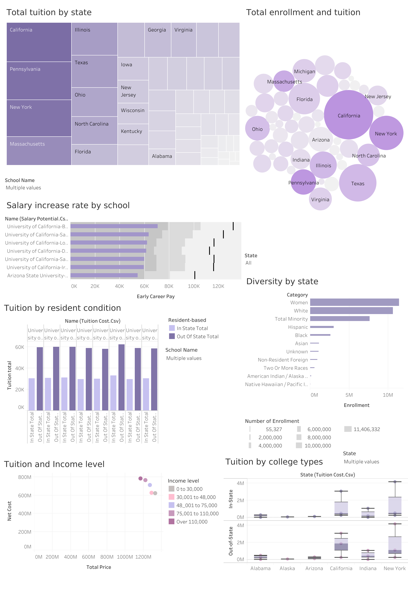

ROI & Outcome Analysis
Mar 2024
This project analyzed the relationships between tuition, income levels, diversity, and early/mid-career pay across universities using Tableau. I now frame it as a financial outcome and ROI analysis exercise: define segments, compare expected outcomes, and communicate trade-offs clearly. Key insights included:
- High tuition often correlates with higher early career pay but not necessarily long-term ROI.
- Demographic and socioeconomic factors can influence student outcomes and should be interpreted with careful caveats.
- Interactive dashboards allowed dynamic filtering by state, income, and program type.
Skills Applied: Tableau, financial outcome analysis, segmentation, visualization, statistical interpretation